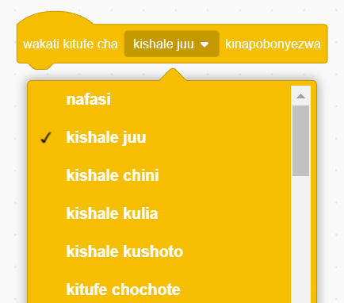

Cheza mchezo wakati namba katika chumba cha kwanza ni 10 na chumba cha pili namba ikiwa ni 6. Hii ni hali ya kweli kwa sababu 10 ni kubwa kuliko 6. Je, nini umesikia, umeona au umehisi katika hatua hii?
Badilisha namba ili chumba cha kwanza iwepo namba 6 na chumba cha pili iwepo namba 10. Kisha, cheza tena mchezo. Hii si hali ya kweli kwa sababu 6 si kubwa kuliko 10. Je, umesikia, umeona au umehisi nini katika hatua hii?
Kazi ya kufanya namba 14: Kuunda mchezo wa kumfanya aende juu na chini ‘Sprite’(Cat) huku akitoa sauti
Hatua zifuatazo zitakuongoza kuunda mchezo ambapo mchezaji atampeleka ‘Sprite’ kwenda juu ama chini. Wakati huo huo Sprite atakuwa anatoa sauti.
Bofya au tumia mishale menyu ya bloku za ‘Matukio’.
Buruta na dondosha bloku ya ‘wakati kitufe cha kinapobonyezwa’ kwenye eneo la kuandikia kama inavyoonekana au kinavyobainishwa katika Kielelezo namba 42. Kisha changua ‘kishale juu’.

Maelezo ya programu fikivu ya Quorum: Orodha ya vitufe vya kibodi imefunguliwa na kishale juu kimechaguliwa. Tukio hili huanzisha programu mtumiaji anapobonyeza kishale juu. Katika Quorum, tukio la kibodi husikilizwa ili amri inayofuata itekelezwe mara kitufe hicho kinapobonyezwa.Kielelezo namba 42: kuchagua ‘kishale juu’.